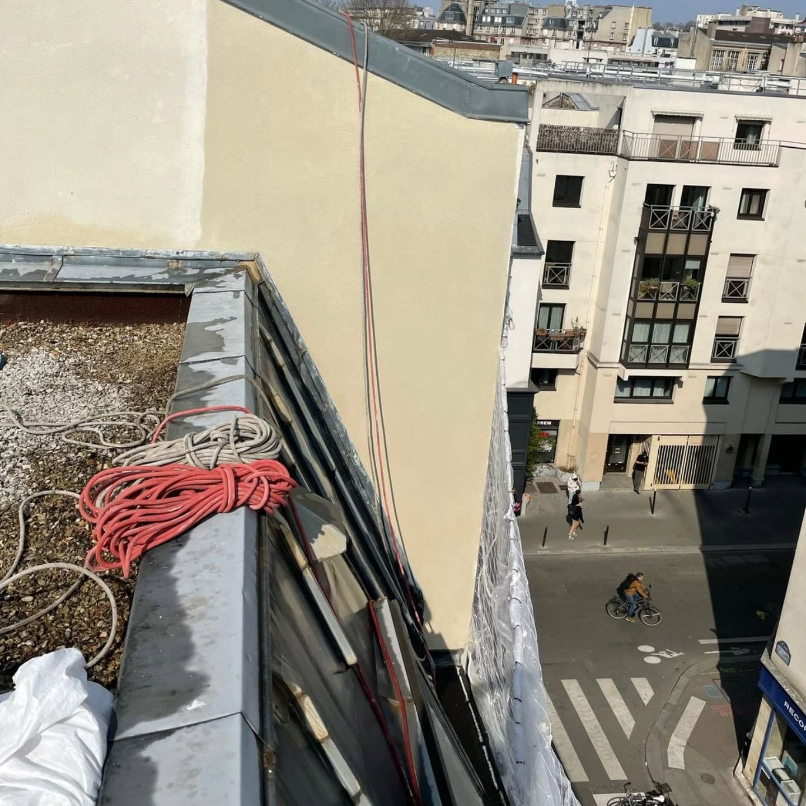

Prestations
Ce qu'on réalise

Façade
Ravalement de façade
Nettoyage, traitement et mise en peinture de façades. Enduit chaux traditionnel, peinture minérale. Intervention sur cordes pour les zones inaccessibles sans échafaudage.
Sur devis selon surface

Cheminée
Réfection de cheminée
Rejointoiement, enduit, habillage zinc, réfection de l'arase et de la couvertine. Remise en état complète des souches de cheminée — accès sur cordes depuis la toiture.
Sur devis

Maçonnerie
Reprises de joints
Déjointoiement et rejointoiement à la chaux ou au mortier. Traitement des fissures, colmatage des points d'infiltration. Intervention ciblée sans mobiliser l'espace au sol.
Sur devis selon linéaire

Enduit
Enduit traditionnel
Enduit chaux taloché ou gratté, finition pierre reconstituée. Techniques traditionnelles adaptées aux immeubles parisiens et haussmanniens.
Sur devis

Nettoyage
Nettoyage & traitement de façade
Nettoyage haute pression, traitement anti-mousse et hydrofuge sur façades. Idéal avant une mise en peinture ou pour un entretien régulier de l'enveloppe du bâtiment.
Sur devis selon surface